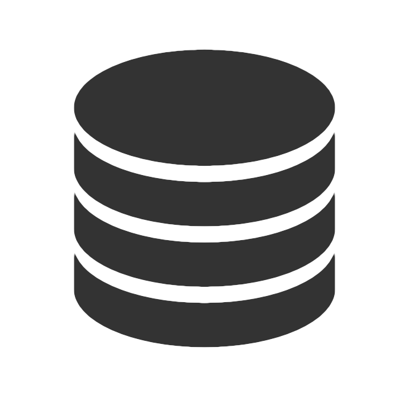

DATAHACK
Highlighted Datasets
These are some open datasets we think you could enjoy working on
The Pokémon Pokédex
Pokémon started out as a Japanese card game and became a worldwide phenomenom. The link is to a public API providing access to all the information about all Pokémons, throughout all existing (seven) generations + including berries!
Two great projects for this dataset would be to create a PokéBots: (1) a bot that you could compete against and (2) a bot that could help you train your Pokémons.
Some additional Pokémon resources are:
- Pokédex Python module - The name says it all
- The Pokédex - A website holding all information about Pokémon, they have no public API (as far as we could tell) but you can scrape it for info
Datasets Subreddit
Reddit is one of the biggest social bullitien boards hosting many communities, one of these communities is the dataset community. In this community people either request or publish open datasets with, some examples are:
- United States Prisioner Dataset - Containing ~18M record of prisoners admission, term, population etc.
- Urbana Police Arrests - Urbana (a city in the Champaign county, in Illinois USA) published a list of all police arrests since 1988.
- Monthly Grain Prices in Englad - All grain prices from 1270-1955
- All Reddit Posts - A dataset containing all posts published in Reddit
- There are people who request datasets (and being provided with one) so if you browse this community, don't just go into the `dataset` tagged posts.
- A scrapper for this community was also developed, so you can browse all available datasets in an easy fashion.
Stack Exchange
Starting in Stack-Overflow, the Stack-Exchange network is a collection of Q&A websites, each dealing with a different topic - from porgramming to home improvement. These vast knowledge bases, some containing over a few millions of answers, are available to download in XML format. Some projects that you could take with this dataset are:
- How many questions are unique? We believe that most questions have been answered before (in some form or another) so why not develop an automated answering system?
- Could we teach a machine to code based on answers from Stack-Overflow?
- Is there similarity between different sites relating to similar topics? for instance, do questions asked around Latin based languages have a similar answer?
GitHub
GitHub is the largest host of open-source projects, containing over 31M projects with contributions of over 12M people. This dataset contains all of the public timeline (so commits, issues, user info, etc.) of GitHub starting 2011. Some cool things you can do with this dataset are:
- Find trends in programming languages through time
- How many times did you use "copy-paste"? How many times did this happen on GitHub, or how unique are the projects?
- Predict possible issues in new projects.
Additional Datasets
This is a list of additional resources to find open datasets from. This is just the tip of the iceberg guys so if you don't see anything interesting here, it dosen't mean that it dosen't exist anywhere else :)
- Kaggle - A datascience community, contains some nice datasets such as school fires in Sweden from 1998-2014.
- The GDELT Project - The GDELT Project monitors the world's broadcast, print, and web news from around the world and identifies people, locations, organizations, emotions and more.
- The New York Times - One of the most widespread newspapers in the world.
- Prize4Life - A dataset containing clinical records of ALS patients.
- European Centre for Medium-Range Weather Forecasts - Datasets containing weather information, one of which contains atmospheric data from 1900 until 2010!
- NASA - A dataset containing all of NASA's data from biological measurements to software usage.